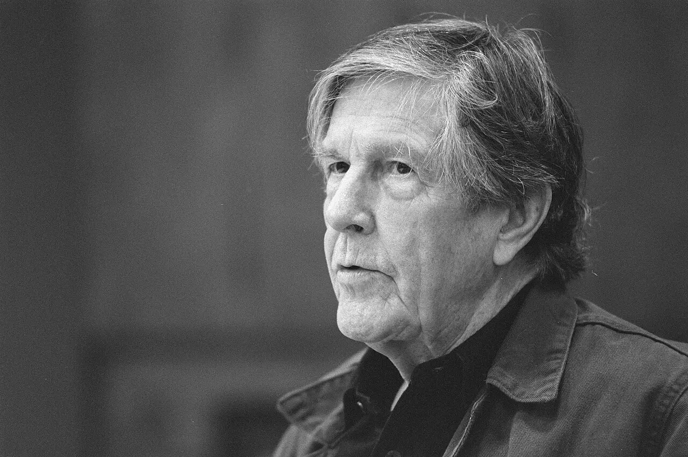

Distingui ciò che vedi da ciò che immagini sia accaduto.
01 · Prima osservazione
Dov’è
l’opera?
Nessun autore, titolo o contesto. Osserva prima ciò che la fotografia rende presente e ciò che lascia fuori campo.
Se l’opera non coincide più con un oggetto stabile, dove esiste?

02 · Distinguere
Cinque presenze,
non cinque sinonimi.
Idea, istruzione, esecuzione, documento e istituzione possono concorrere alla stessa opera, ma nessuno di questi termini la esaurisce automaticamente.
IDEAISTRUZIONEESECUZIONEDOCUMENTOISTITUZIONE
opera ≠ oggettoevento ≠ fotografiaistruzione ≠ esito unicoassenza ≠ immaterialità
03 · Il mondo precedente
Non un anno zero.
Una costellazione.
Tra il 1952 e il 1980 musica sperimentale, movimenti politici, nuovi media, femminismi, minimalismo e istituzioni aprono possibilità diverse. Non formano una marcia inevitabile.
Scegli un nodo per leggere evento, contesto e limite.
Rete delle condizioni
Seleziona un nodo: mostra ciò che rende possibile e ciò che non determina.
04 · Prima della “scomparsa”
Togliere, scegliere, accadere:
operazioni differenti.
Ready-made, monocromo, vuoto, assemblage e forma minimale incrinano l’oggetto tradizionale senza diventare la stessa cosa.
Duchamp · Bicycle WheelAntecedente, non Conceptual Art anni Sessanta · MoMA ↗
Rauschenberg · Erased de Kooning DrawingCancellazione come azione e attribuzione · MoMA ↗
MinimalismoForma, fabbricazione, spazio e spettatore · Tate ↗
“Dematerializzazione”: la formula di Lucy Lippard e John Chandler è decisiva come categoria critica, ma non descrive una sparizione letterale della materia. Restano carta, corpi, registrazioni, contratti e lavoro.
05 · Conceptual Art
L’idea può essere
l’opera?
“Idea prima dell’oggetto” non significa che ogni oggetto sia irrilevante. Linguaggio, progetto, definizione, serialità e contesto assegnano ruoli diversi ai supporti.
Scegli un caso: osserva che cosa viene deciso, delegato, materializzato e riconosciuto.
proposizioneevento situato
06 · Laboratorio dell’istruzione
La stessa frase produce
lo stesso lavoro?
Comporre un’istruzione significa distribuire decisioni. Eseguirla significa interpretare, tradurre, talvolta sbagliare.
ISTRUZIONE DIDATTICA ORIGINALE · 23/01
Traccia una linea che registri trenta secondi senza rappresentare un oggetto.Non è un’opera storica e non imita un artista.Confronta le esecuzioni
Nessuna variante ancora registrata.
07 · Evento
Quando l’opera
accade.
Happening, event, action e performance sono termini utili ma porosi. Cambiano preparazione, durata, rapporto con il pubblico e possibilità di ripetizione.
Chi è il pubblico?
08 · Corpo, genere, potere
Il corpo non è
un materiale neutro.
Età, genere, razzializzazione, salute, reputazione e posizione sociale cambiano ciò che un gesto espone e il modo in cui viene ricevuto. Il rischio non è un valore estetico automatico.
PRESENZA
Yoko OnoCut Piece, 1964MoMA ↗
Carolee SchneemannMeat Joy, 1964MoMA ↗
Adrian PiperCatalysis, 1970–71MoMA ↗
Ana MendietaCorpo, terra, traccia, fotografiaMoMA ↗
Responsabilità: questa sezione non ricostruisce azioni dolorose e non trasforma la vulnerabilità in spettacolo. Distingue condizioni, poteri e mediazioni.
09 · Evento e documentazione
La fotografia resta.
Ma non coincide.
Una registrazione seleziona posizione, istante e formato. Può essere testimonianza, materiale d’opera, edizione autonoma, prova di autenticità o immagine promozionale.
Percorso della traccia
Chi costruisce l’attribuzione?
Segui la catena: ogni passaggio conserva qualcosa e ne perde altro.
10 · Politica e geografie
Non un centro
e le sue periferie.
Azioni e concettualismi emergono in condizioni locali diverse. Femminismi, segregazione razziale, dittature, colonialismo e modernizzazioni autoritarie modificano mezzi e rischi.
Scegli un centro per vedere un problema situato, non una versione locale di New York.
Che cosa cambia se cambia la lente?
11 · Italia
Idea, materia, linguaggio,
azione.
“Arte Povera”, ricerche concettuali, verbovisive e performative si incrociano, ma non sono sinonimi. Materia e idea non sono poli incompatibili.
Scegli un nodo per distinguere operazione, contesto e limite dell’etichetta.
12 · Proprietà e conservazione
Come si compra
ciò che scompare?
Si possono acquisire oggetti, certificati, diritti di esecuzione, istruzioni, file, edizioni e responsabilità di trasmissione. Comprare non significa possedere ogni possibile manifestazione.
SIMULAZIONE DIDATTICA
Nessuna scheda generata
Non è un certificato autentico e non crea diritti.Il circuito non sparisce
13 · Secondo sguardo
Che cosa
rimane?
Ritorna al documento iniziale. Sapere chi ritrae non trasforma la fotografia nell’opera che immagini: rende più precisa la distinzione.
La rivelazione corregge l’ipotesi
John Cage, ma non un’opera di Cage.
Rob C. Croes realizzò questo ritratto per Anefo il 16 novembre 1988. Il negativo è conservato dal Nationaal Archief con numero 934-3585 e licenza CC0.
- Che cos’è
- Una fotografia d’archivio
- Che cosa documenta
- La presenza di Cage davanti al fotografo
- Che cosa non documenta
- Una particolare esecuzione di 4′33″
- Perché apre il percorso
- Rende visibili presenza, assenza e attribuzione
La tua prima ipotesi
Non hai ancora scritto la prima nota.
Atlante di ciò che rimane
Attiva soltanto le categorie che sai collegare a un’azione svolta nel modulo.
Nessuna categoria ancora scelta.
Sintesi dalle tue azioni
Non un testo prefabbricato
La sintesi usa soltanto note, laboratori e scelte che hai realmente compiuto.
Esplora il modulo per costruire la sintesi.
Verifica finale · 16 nuclei
Capire, non
fare media.
0 / 16 compresi
16 / 16
Hai compreso tutti i nuclei, direttamente o attraverso il recupero.
L’opera non è diventata “nulla”: ha distribuito la propria esistenza fra decisioni, corpi, tempi, documenti e istituzioni.